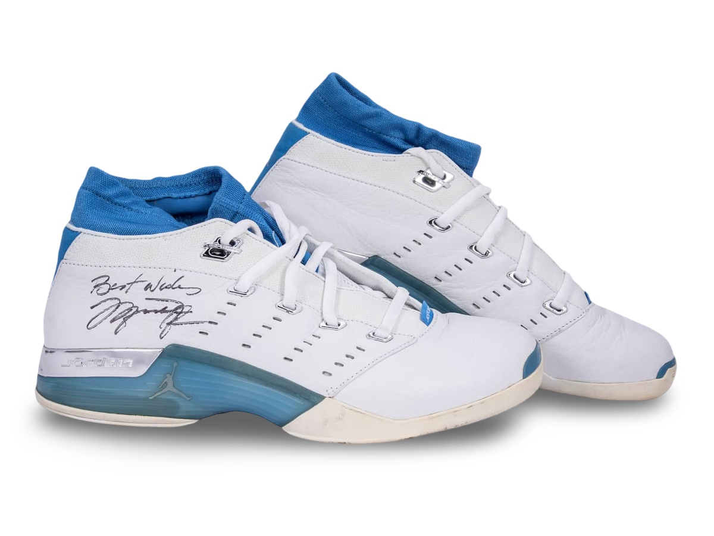
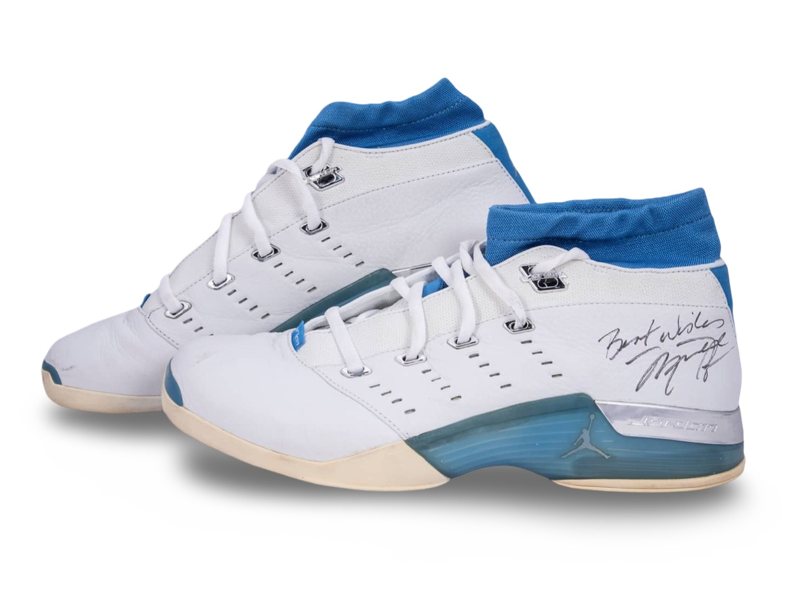
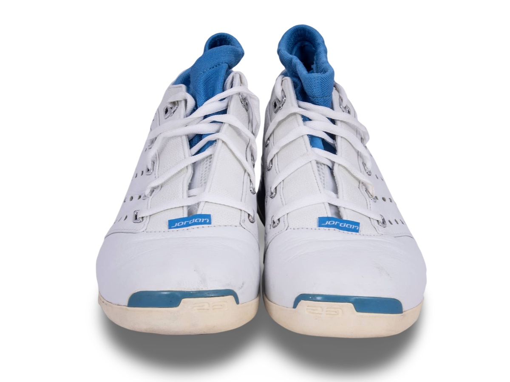

Air Jordan XVII Low worn by Michael Jordan.
A gift to long time referee Hue Hollins, Jordan penned the
inscription "Best Wishes"
Public Sale
- Auction House: Goldin Auctions
- Sale Date: January 31, 2021
- Lot #: 122
- Sale Price: $14,400
Photo Match Details
- Photo-Matched: No
- Games Photo-Matched: 0
- Photo-Matched By:None
Research & Provenance
- Provenance comes from Hue Hollins, former NBA referee. Michael Jordan signed and inscribed the shoes personally Best Wishes.
- Independent research can not verify game use - style code is generic retail code.